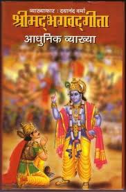
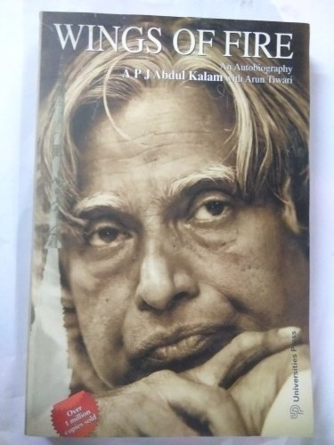
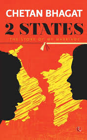

These are some books that i have read so far.

Bhagwat Gita
The Bhagavad Gita (“Song of God” or “Song of the Lord”) is among the most important religious texts
of Hinduism and easily the best known. It has been quoted by writers, poets, scientists, theologians, and
philosophers – among others – for centuries and is often the introductory text to Hinduism for a Western audience

Wings of fire
The 'Wings of Fire' is one such autobiography by visionary scientist Dr. APJ Abdul Kalam,
who from very humble beginnings rose to be the President of India.

The Monk who sold his ferrori
The Monk Who Sold His Ferrari is a self-help book by Robin Sharma, a writer and motivational speaker.
The book is a business fable derived from Sharma's personal experiences after leaving his career as a
litigation lawyer at the age of 25. .

2 States
2 States: The Story of My Marriage commonly known as 2 States is a 2009 novel written by
Chetan Bhagat. It is the story about a couple coming from two different states in India,
who face hardships in convincing their parents to approve of their marriage
Love is Blind
The 'Wings of Fire' is one such autobiography by visionary scientist Dr. APJ Abdul Kalam,
who from very humble beginnings rose to be the President of India.